Masʼul tashkilot
Tegishli hududlarda kompleks qurilish loyihalarini amalga oshirish uchun masʼul tashkilot sifatida faoliyat yuritadi.
Buxoro viloyati hokimligi muassisligidagi investitsiya kompaniyasi
«Buxoro invest kompaniyasi» AJ — PF-29-son Farmoni asosida tashkil etilgan: renovatsiya, kompleks qurilish, qurilishga tayyor yer lotlari auksioni va davlat-xususiy sheriklik.
Kompaniya haqida
«Buxoro invest kompaniyasi» aksiyadorlik jamiyati Oʻzbekiston Respublikasi Prezidentining 2026-yil 24-fevraldagi PF-29-son Farmoni asosida Buxoro viloyati hokimligi muassisligida tashkil etilgan. Kompaniyaning asosiy vazifasi — davlat va tadbirkorlik subyektlari oʻrtasida «koʻprik» vazifasini bajarish.
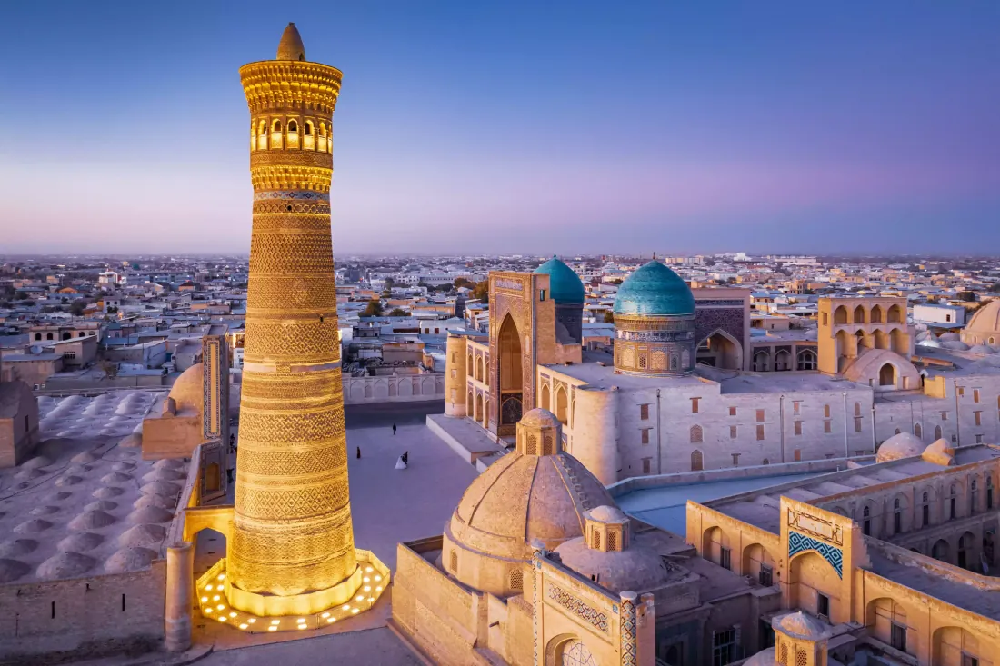
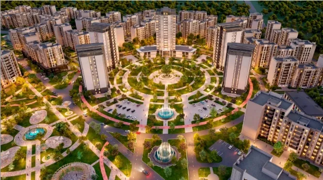
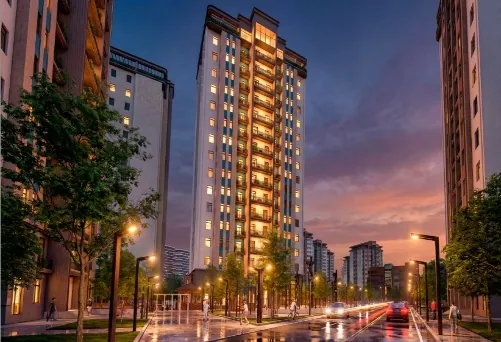
Tegishli hududlarda kompleks qurilish loyihalarini amalga oshirish uchun masʼul tashkilot sifatida faoliyat yuritadi.
Hudud master-rejasi va qurish loyihasini ishlab chiqilishini taʼminlaydi, hududni aniq chegaralab, lotlarga ajratadi.
Birlamchi ruxsat berish va loyiha-smeta hujjatlarini rasmiylashtirib, arxitektura-shaharsozlik kengashida koʻrib chiqilishini taʼminlaydi.
Yer, hujjat, muhandislik tarmoqlari va kompaniyani saqlash xarajatlarini hisobga olib lotlarning boshlangʻich narxini belgilaydi, elektron onlayn auksionga chiqaradi.
Tashqi muhandislik-kommunikatsiya tarmoqlarini oʻtkazish uchun masʼul organlar faoliyatini muvofiqlashtiradi.
Urbanizatsiya milliy qoʻmitasi bilan kelishilgan holda eng yaxshi takliflarni tanlab, loyiha tashkilotlarini jalb qiladi.
Faoliyat
Renovatsiyadan tortib «Yer banki» va davlat-xususiy sheriklikkacha — kompaniyaning ustuvor vazifalari. Toifa boʻyicha saralash mumkin.
Moliyaviy model
Tadbirkorlik infratuzilmasini rivojlantirish jamgʻarmasi mablagʻlari yer auksionlari, davlat mulkini sotish, DXSH va boshqa manbalardan shakllanadi hamda hududlarni rivojlantirishga qaytariladi.
11 ta asosiy va 3 ta qoʻshimcha manba — batafsil koʻrish uchun bosing
moliyalashtirilgan loyihalardan, shu jumladan investitsiya kompaniyalari yaratgan yangi aktivlarni sotishdan tushumlar.
investitsiya kompaniyalari davlat sherigi sifatida qatnashgan loyihalardan.
xususiylashtirish va ijara huquqini onlayn-auksionda sotishdan tushgan mablagʻning (VM belgilagan xarajatlar chegirilgach) 100 foizi hamda tuman byudjetiga yoʻnaltiriladigan qism.
ijara, auksion tushumlari, qoʻshimcha va ijara toʻlovlarining mahalliy byudjetga yoʻnaltiriladigan qismining 100 foizi.
reklama va axborot obyektlarini joylashtirish toʻlovining mahalliy byudjetga yoʻnaltiriladigan qismining 100 foizi.
arxitektura topshirigʻi qiymatiga kiritilgan toʻlovning 100 foizi.
sotishdan viloyat va tuman (shahar) mahalliy byudjetiga tushgan qismining 100 foizi.
respublika byudjetiga yoʻnaltiriladigan tushumning 50 foizi.
mulk huquqi asosida auksionda sotishdan tushgan mablagʻ (VM xarajatlari chegirilgach) va tuman byudjeti ulushining 100 foizi.
vaqtincha boʻsh mablagʻlarni tijorat banklari depozitlariga joylashtirishdan.
viloyat byudjetining qoʻshimcha manbalari, xayriyalar, xalqaro moliya institutlari grantlari.
avtotransport turargohlari master-rejalarini ishlab chiqish va auksionga chiqarish.
tutash hududlarni yengil konstruksiya asosida tijorat maqsadida auksionga chiqarish.
DXSH asosida tushgan tushumlar.
Loyihalar portfeli
Renovatsiyadan 2 mlrd dollarlik xorijiy investitsiya loyihalarigacha. Rasmlarni kattalashtirish uchun ustiga bosing.
Ikki qavatli, maʼnan eskirgan uy-joylar oʻrniga zamonaviy 9 qavatli turar-joy majmuasi quriladi. Mavjud uy-joylar sotib olinadi, buziladi, yangi hudud master-reja asosida lotlarga ajratilib auksionda sotiladi.
Master-reja koʻrsatkichlari: mavjud holat va taklif etilgan loyiha
| Koʻrsatkich | Mavjud | Taklif |
|---|---|---|
| Aholi soni | 402 | 3 482 |
| Maktab yoshidagi bolalar | 18 | 221 |
| Maktabgacha yoshdagi bolalar | 26 | 198 |
«ROX Group» (Vyetnam) tomonidan amalga oshiriladigan koʻp funksiyali turar-joy va biznes majmuasi. Shahar sharqiy qismida, mavjud turar-joy massivlariga tutash, tekis relyefli 25 gektar maydonda «hammasi bir joyda» tamoyilida shahar tumani barpo etiladi.
Bosh reja doirasida funksiyalar boʻyicha taqsimot
| Funksiya | Ulush | Maydon, ga |
|---|---|---|
| Turar-joy (kvartiralar va birinchi qavatda savdo) | 32% | 8,0 |
| Jamoat obyektlari (maktab, sogʻliqni saqlash, sport) | 8% | 2,0 |
| Yashil hududlar (bogʻ, xiyobon, suv obyektlari) | 36% | 9,0 |
| Tijorat va xizmat koʻrsatish | 8% | 2,0 |
| Transport va ichki harakat tizimi | 16% | 4,0 |
Maydon Buxoro shahri sharqiy qismida, Premium Village Bukhara kabi yangi turar-joy massivlariga tutash va shahar markaziga olib boruvchi asosiy yoʻllarga yaqin joylashgan. Hozir hudud oʻzlashtirilmagan qishloq xoʻjaligi yerlaridan iborat, relyefi tekis — yirik koʻlamli qurilish uchun qulay.
Loyiha oʻziga xos koʻp qavatli markaz, savdo shoxobchali uylar, yashil bogʻlar, markaziy hovuz hamda taʼlim, tijorat va dam olish obyektlarini oʻz ichiga oladi. Buxoroning madaniy va turistik salohiyatidan foydalanib, mahalliy oʻziga xoslikni xalqaro standartlar bilan uygʻunlashtirgan barqaror jamoa yaratiladi.
Premium turar-joy, savdo va xizmat koʻrsatish obyektlarini oʻz ichiga olgan koʻp funksiyali shaharcha. Shimoliy va janubiy chegaralari mavjud turar-joy hududlariga tutash, sharqiy tomoni hududlararo transport magistrali bilan belgilangan.
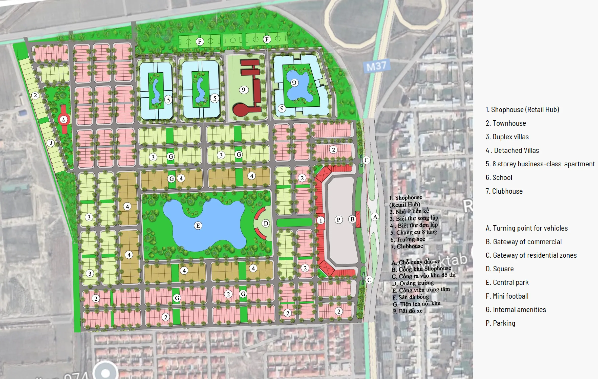
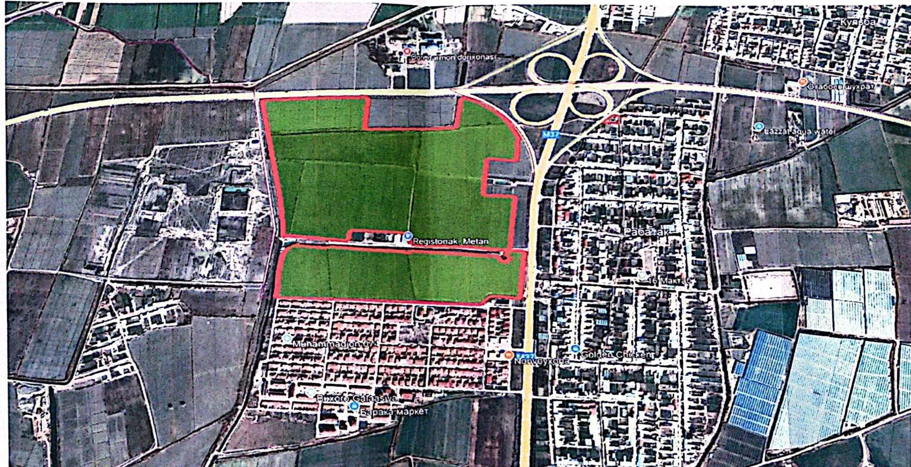
Buxoro hududining tarixiy meʼmorchilik ruhida, XIX asr anʼanalari asosida, zamonaviy xizmat koʻrsatish imkoniyatlari bilan etno qishloq yaratish. Turizm, madaniyat, hunarmandchilik va milliy qadriyatlarni uygʻunlashtirgan yagona maskan.
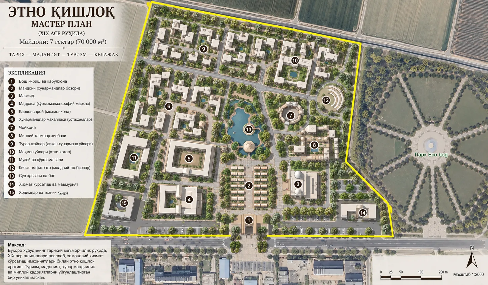
Prezidentning 2026-yil 3-sentyabrdagi PQ-313-son qaroriga muvofiq viloyatda kamida 1 000 gektar yerda turizm klasteri tashkil etiladi. Tanlangan yerlar «Buxoro invest kompaniyasi» AJga 49 yildan oshmagan muddatga toʻgʻridan-toʻgʻri ijaraga beriladi, tasdiqlangan master-reja asosida auksionga chiqariladi.
Yangi tanlangan yerlarni auksionda sotishdan «Buxoro invest» AJga tushadigan mablagʻlar — 2026-yil yakuniga qadar 250 mlrd soʻm — Yangi Buxoro xalqaro aeroportiga olib boruvchi yoʻl qurilishiga yoʻnaltiriladi (4 qatorli asfalt-beton qoplama va 2 qatorli BRT).
Tuman hokimligi zaxirasidagi 4,94 gektar yerda aholi punkti bosh rejasiga muvofiq zamonaviy savdo va maishiy xizmat obyektlari quriladi. Tuman hokimi «Buxoro invest» AJni buyurtmachi tashkilot etib belgilashni soʻragan (5-oktabr 2026).
Buxoro turizm majmuasiga tutash 20 gektargacha maydonda aquapark qurish — 2027–2029-yillar. Yer tayyor loyiha sifatida «Buxoro invest» AJ orqali auksionga chiqariladi.
Eko-markazga tutash hududda safari, kinoshaharcha, koʻpkari va milliy xalq oʻyinlari xizmatlarini tashkil etish; yer uchastkalari elektron onlayn auksionga chiqariladi.
Gilam toʻqish, hunarmandchilik oʻquv markazi va Etno-haus loyihasi uchun 2 gektar yer — tayyor loyiha sifatida auksionga chiqarish (2027).
Yangi aeroportga olib boruvchi yoʻl yoqasida koʻngilochar kompleks barpo etish: yer toifasini oʻzgartirish, tayyor loyiha sifatida auksion, 2027-yildan qurilish.
Strategik hamkor
1996-yildan beri Hanoyda faoliyat yuritayotgan yirik koʻp tarmoqli kompaniya Buxoro viloyatida jami 2,0 mlrd AQSH dollarlik ikkita loyihani amalga oshirmoqda.
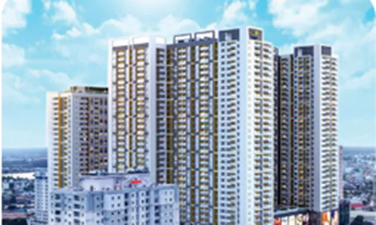
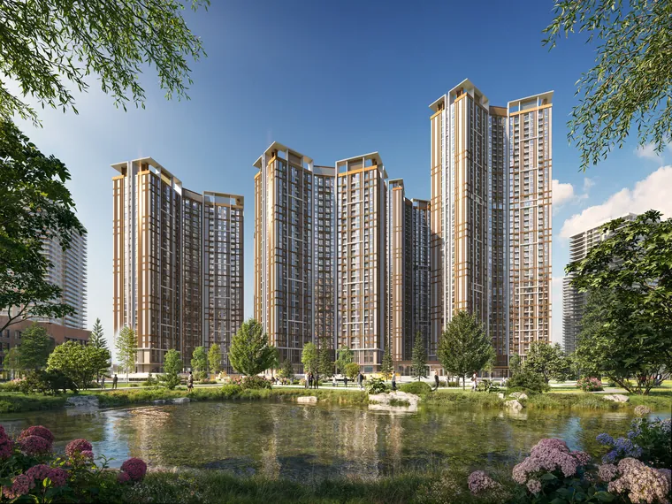
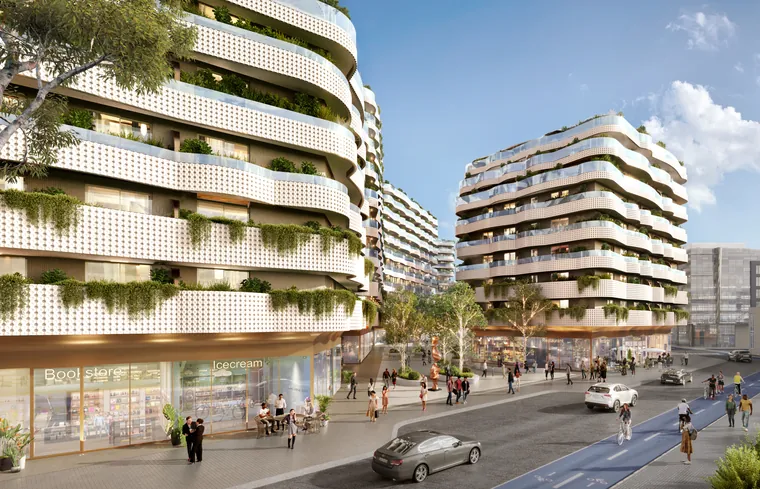
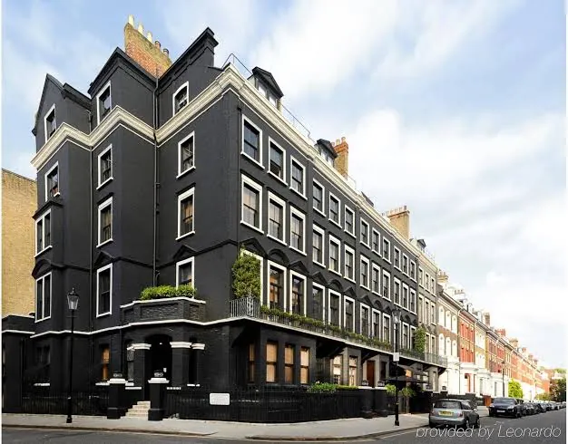
«Tayyor paket»
Yer uchastkasi muhandislik-kommunikatsiya tarmoqlariga ulanish texnik shartlari, arxitektura-shaharsozlik kengashi kelishuvi va qurilishga ruxsat beruvchi barcha hujjatlar bilan birga elektron onlayn auksionga chiqariladi (PF-177, 2026-yil 28-avgust). Buxoro viloyati uchun reja — 50 ta uchastka; qoʻshimcha 65 ta uchastka roʻyxati shakllantirilgan.
Bosib hudud boʻyicha saralang
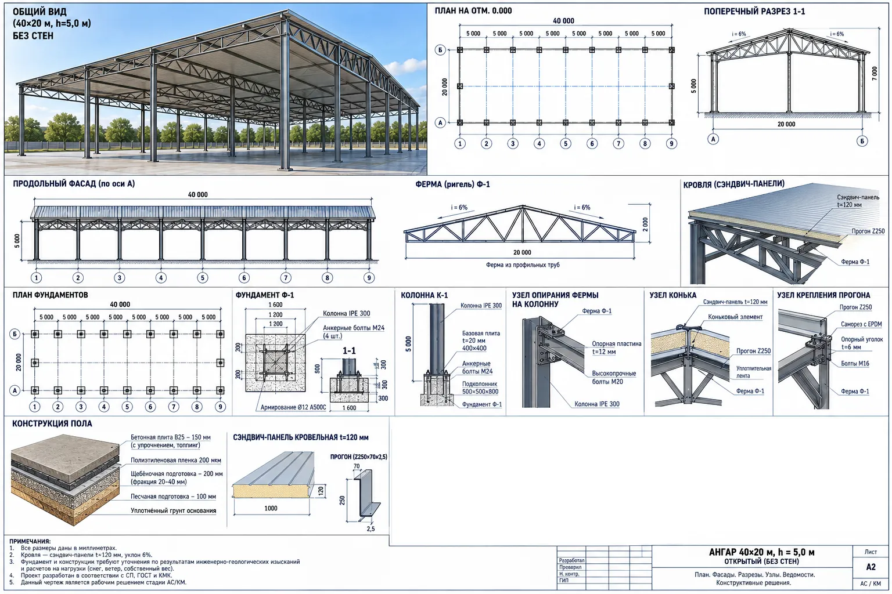
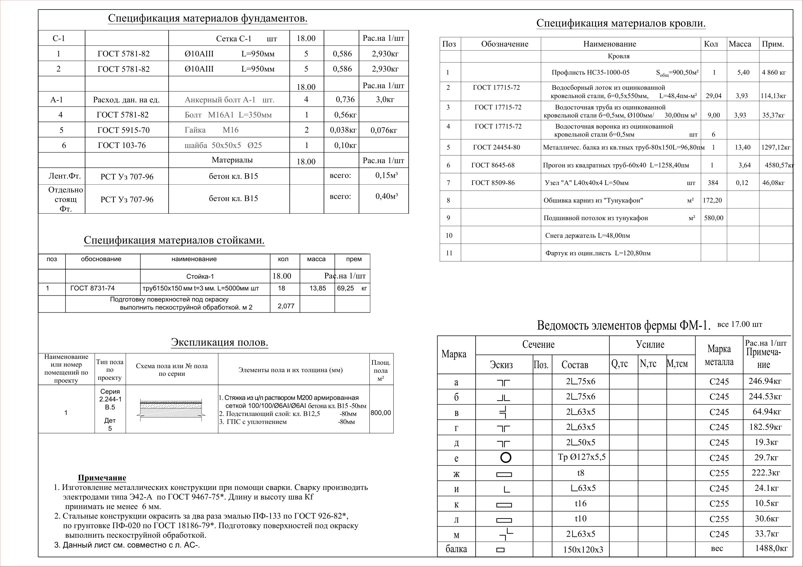
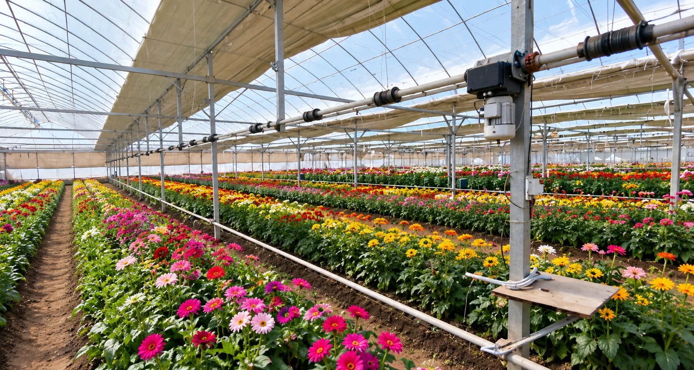
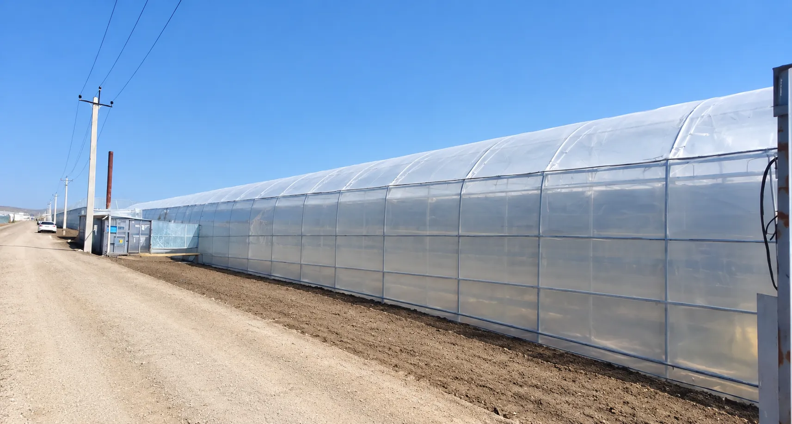
Chizma va spetsifikatsiya varaqlaridan
2026–2027
Kompaniya 2026–2027-yillarda uchta yoʻnalishda ish olib boradi. Quyida faqat hujjatlarda keltirilgan koʻrsatkichlar berilgan.
Boʻsh yer maydonlarini xatlovdan oʻtkazish, master-reja ishlab chiqib, auksionga chiqarish.
Binolarni kompaniya balansiga oʻtkazish va auksion savdolariga chiqarish.
Viloyat kesimida munitsipal mulklarni xatlovdan oʻtkazish va auksionga chiqarish.
Hujjatlarda keltirilgan koʻrsatkichlar va ularning manbasi
Davlat aktivlari va munitsipal mulklar boʻyicha koʻrsatkichlar xatlov yakunlangach qoʻshiladi.
Yoʻl xaritasi
Yangi aeroport yoʻli boʻylab turizm klasteri (kamida 1 000 ga); yerlar «Buxoro invest» AJga 49 yilgacha toʻgʻridan-toʻgʻri ijaraga beriladi.
Agroportal orqali Hukumat komissiyasiga: 517,01 ga yaylov va 439,53 ga ekin yeri.
Xonobod MFYdagi 4,94 ga yer boʻyicha murojaatlar; DAAB tomonidan 65 ta qoʻshimcha uchastka roʻyxati shakllantirildi.
Master-reja uchun 20 mlrd soʻm foizsiz ssuda; yangi yerlarni auksionda sotishdan 250 mlrd soʻm — aeroport yoʻli qurilishiga.
Ustav fondi shakllantirilgach, xalqaro obligatsiyalar orqali davlat kafolatisiz mablagʻ jalb qilinadi.
Yer toifasini oʻzgartirish va yerlarni xorijiy investorga sotish boʻyicha Hukumat qarori loyihalarini kiritish.
4 qatorli asfalt-beton qoplamali, 2 qatorli BRT yoʻl.
Turizm klasteri yerlari, «Jayron» eko-markazi atrofi va Shahriston (2 ga) — tayyor loyiha sifatida onlayn auksionga.
20 ga gacha maydonda aquapark; turizm klasterida brend mehmonxona, restoran va 120 ta savdo-servis obyekti.
Hujjatlar
Aholini uy-joy bilan taʼminlash ishlarini jadallashtirish va koʻp kvartirali uylar qurilishini samarali tashkil etish chora-tadbirlari toʻgʻrisida — investitsiya kompaniyalari tashkil etilishi asosi.
Koʻp kvartirali turar joy majmualarini qurishda kompleks qurilish mexanizmlarini joriy etish va shaffoflikni taʼminlash chora-tadbirlari toʻgʻrisida.
«Buxoro invest kompaniyasi» AJ Buxoro viloyati hokimligi muassisligida tashkil etilishi.
Investitsiya loyihalarini davlat va tadbirkorlik subyektlari oʻrtasida hamkorlik asosida amalga oshirish; 1-ilovada investitsiya kompaniyalarining ustuvor vazifalari.
«Buxoro invest kompaniyasi» AJ Kuzatuv kengashi tarkibini tasdiqlash va direktor lavozimiga nomzodni koʻrib chiqish.
Rahbarning Buxoro viloyatiga tashrifi yakunlari: aquapark, aeroport yoʻli klasteri, ROX Group yerlari, Shahriston va boshqa loyihalar.
Yer uchastkalarini «tayyor paket» usulida elektron onlayn auksionga chiqarish rejasi (8-ilova): Buxoro viloyati — 50 ta uchastka.
2026-yilda Buxoro viloyatini ijtimoiy-iqtisodiy rivojlantirish boʻyicha qoʻshimcha chora-tadbirlar: turizm klasteri, 20 mlrd soʻm ssuda, evrobond.
Aloqa
Loyihalarimiz, yer lotlari va hamkorlik shartlari boʻyicha «Buxoro invest kompaniyasi» AJ bilan bogʻlaning.
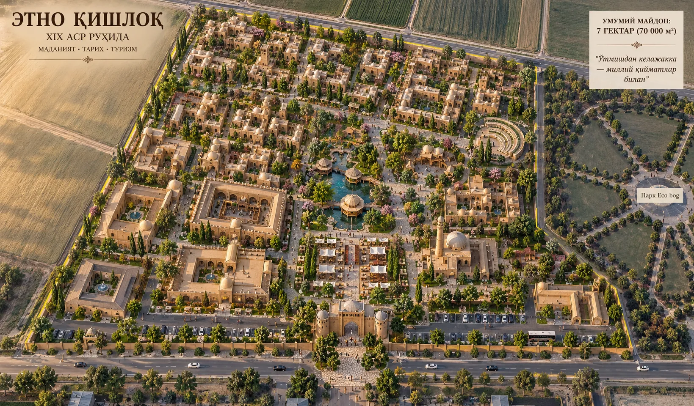